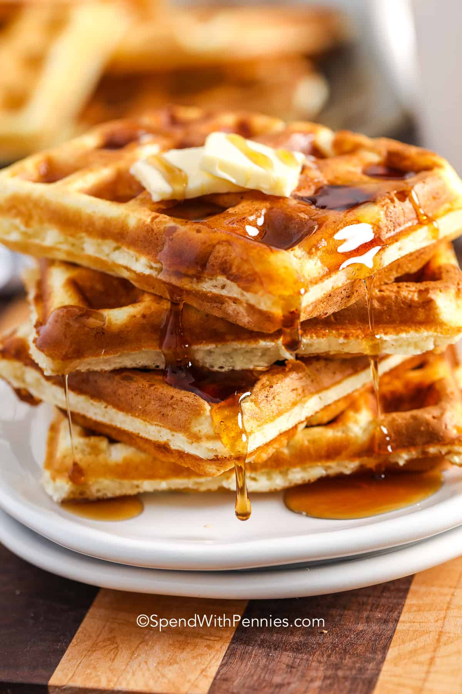

Fluffly Waffle

Description
Crisp on the outside, fluffy on the inside, these waffles are delicious drizzled with melted butter and syrup.
The perfect start to any weekend morning!
Ingredients
- Butter
- Milk
- Powder
- Sugar
- Eggs
- Flour
Steps
- Separate the eggs and beat the egg whites until stiff. (Optional but recommended).
This extra step makes this recipe extra fluffy compared to other waffle recipes.
- Mix dry and wet ingredients (per recipe below).
Fold in whipped egg whites.
- Ladle batter into a hot waffle iron and cook until lightly browned and crispy, about 5 minutes